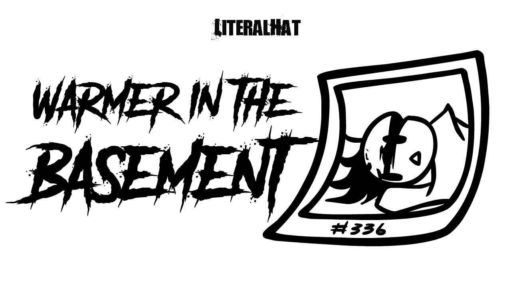

Warmer in the Basement
| Published On | June 6, 2020 |
|---|
One of the earlier videos featuring and posted on the 6th of June 2020. It is animated to the song "It's Warmer in the Basement" by Cobra Starship.
Video Outline
Hat expresses his admiration for Chicken Man, who is currently held hostage in Hat's basement, while showing off the photographs of his previous victims, all of which have been labeled with numbers. The photographs featured were numbers 01, 19, 69, 85, and 336. With the former looking similar to the woman featured in the previous animation, .
Chicken Man attempts to escape by cutting the rope tying him down the chair but is quickly prevented by Hat. Despite this Hat seem to disregard this escape attempt and gives Chicken Man a hug.
Description
This animation is often unlisted or privated from Charlie's Youtube Channel. It has the following as the description:
Hi. I no longer associate with this video. The period in which this was made is a great source of hurt / trauma for me, but it remains uploaded for archival purposes.
I would rather not deny that I was once a misogynist, racist, and generally a piece of shit. At the time I lacked positive role models and was surrounded by the wrong people.
If you find yourself resonating with this video, I do not consider you a viewer or a part of my audience.